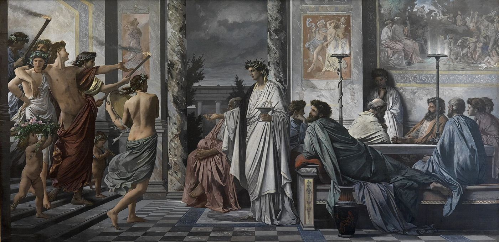

τί ἐστι;Anselm Feuerbach, Plato's Symposium, 1873
What Plato's theory actually claims, and what it does not
"I try to give some support to the view that forms are not meanings or particulars, but explanatory properties."
On Ideas, ch. 3 §5, 'Plato's view'
Three denials and one affirmation. Everything in the three books is in service of these four claims.
On the view I defend, forms are just universals, conceived as real, mind-independent, objective explanatory properties; they are not also or instead particulars. As in his epistemology, so in his metaphysics: Plato's views, this time about forms, have much to recommend them still.Selected Essays, Introduction §VII, pp. 30–31
Note the three words doing the work: real (not mental, not linguistic), mind-independent (objective, there whether or not anyone thinks of them), and explanatory — that last one is the load-bearing term of the whole interpretation. A form is not just a property; it is the property in virtue of which things are as they are.
She takes the Socratic question as the source, and on this she sides with Aristotle.
The form of piety… is the one thing in virtue of which all pious things are pious, and reference to it explains why pious things are pious. Socratic forms are explanatory essences: the form of piety is the nature or essence of piety, what piety really is… Since it is some one thing, the same in all cases of piety, it is a universal, in the Aristotelian sense of being a one over many.Plato 1, Introduction §I
Then the distinction that decides the first denial:
Here it is useful to distinguish between a realist and a semantic conception of universals. On the realist conception, universals are genuine properties that, as Plato puts it, 'carve at the natural joints' (Phdr. 265e; cf. Plt. 262a–b); on the semantic conception, universals are the meanings of terms. On the view we have been considering, Socratic forms are not meanings; rather, they are universals conceived as genuine properties of things.Plato 1, Introduction §I
On the origin of the theory she takes Aristotle's report at face value — knowledge requires definition, and definitions require the existence of real universals. She cites three passages: Metaph. A 6, 987b29–988a8; M 4, 1078b12–32; M 9, 1086a32–b13. The disagreement with Aristotle comes later, over what follows.
Her single most consequential claim about the arguments — and the one that grounds the first denial.
"I shall argue that Plato does not offer semantic arguments for the existence of forms. His arguments are all epistemological, metaphysical, or both."
On Ideas, ch. 3 §5That is, he argues that the possibility of knowledge requires the existence of forms, where the sort of knowledge at issue is not ordinary linguistic understanding, but knowledge as it contrasts with belief; he also argues that we can explain the way the world is only if there are forms in virtue of which things are as they are. These two sorts of arguments are connected, for Plato believes that the possibility of knowledge requires the existence of forms conceived as real properties of things.On Ideas, ch. 3 §5
The strategy is elegant: rather than argue directly that forms aren't meanings, she surveys every argument Plato gives for their existence and observes that none of them is about language. As she puts it, "the absence of semantic concerns in Plato's discussions of forms casts doubt on the most prominent reasons for supposing that forms play any semantic role."
The metaphysical reason is especially prominent in the famous aitia-passage in the Phaedo (96a ff.), where Plato lays out criteria for adequate explanations. In his view, if x is F and not F, it cannot explain why anything is F; it cannot, in other words, be that in virtue of which anything is F.On Ideas, ch. 4 §6
Bright colour is beautiful in one setting and ugly in another — it suffers compresence of opposites. So it cannot be what beauty is.
Since some sensible properties of F suffer compresence, reference to them does not explain why anything is F, and so they cannot be what F-ness is.On Ideas, ch. 4 §6
"If anything else is beautiful besides the beautiful itself, it is so for no other reason than that it participates in the beautiful" (Phd. 100c4–6)… it is not because of "bright colour or shape or anything else of that sort" (100d1–2) that anything is beautiful; rather "it is because of the beautiful that all beautiful things are beautiful" (100d7–8).Plato, quoted in On Ideas ch. 4 §6
In Plato, the Socratic view that the form of F is the one thing by which all Fs are F becomes the view that forms are aitiai, causal or explanatory factors — at least in certain cases, things are as they are because they participate in non-sensible forms that escape compresence.On Ideas, ch. 4 §6
This is the sentence that makes "explanatory properties" more than a label. The Form is not a thing standing behind the world; it is what the correct explanation cites.
Her most-cited correction, and it holds across all three books.
Almost every introduction tells you the Forms are posited because the sensible world is in Heraclitean flux. Fine says that is not Plato's argument. The premise he actually uses is compresence of opposites — that the same thing is F and not-F at once, in different respects or relations — not that things change over time.
My own view is that Plato never believed that the sensible world is in [Extreme Heracleitean flux]… that is not the sort of change he appeals to in arguing that there are forms. Rather, in arguing for forms, he appeals to compresence rather than to any sort of succession.Plato 1, Introduction
Met. i. 6 says only that flux (i.e. on my interpretation, compresence) shows that forms are different (hetera; cf. Phd. 74a11, c7) from sensibles; separation is not mentioned.On Ideas, ch. 8 §7
On the flux reading, the sensible world is disqualified because it is unstable — nothing stays put long enough to be known. On the compresence reading, it is disqualified because it is ambiguous — the same item answers to opposite descriptions, so citing it explains nothing. The second is a far more defensible thesis, and it does not require Plato to hold the wild doctrine that nothing is ever the same for two moments together.
She names the scholars she is correcting: Cornford, Plato's Theory of Knowledge, and Cherniss.
The most precise piece of argument in her whole account of the Forms.
Every argument Plato gives establishes that forms are different from sensibles. None establishes that they are separate — able to exist uninstantiated. She refuses to let the second be read off the first.
This shows that forms must be different from sensible particulars (and from sensible properties). But to say that forms are different from sensibles falls short of saying that they are separate from them: A can be different from B, without being able to exist without it.Selected Essays, Introduction §VIII, p. 33
Although separation is usually thought to be one of the distinguishing features of Platonic, as opposed to Socratic, forms, Plato never (in my view) explicitly argues, or even says, that forms [are separate].Plato 1, Introduction, p. 14
Plato never says that forms exist separately (chōris). Still, Aristotle believes that Plato takes forms to be separate; so it is reasonable for him to wonder whether Plato has an argument that implies that they are.On Ideas, ch. 8 §7
And she is scrupulous about not convicting Plato of a fallacy. Aristotle, she notes, does not accuse him of one either:
Aristotle seems to believe, then, that the 'flux argument' shows only that forms are non-sensible universals that are the basic objects of knowledge and definition; that forms are separate follows only with the aid of further premisses. These further premisses give Plato a valid argument for separation.On Ideas, ch. 8 §7 — on Metaph. 13.9
So where does separation come from? Her answer is symmetrical and unusually generous to both philosophers:
None the less, I think Plato accepts separation. Just as Aristotle seems to assume without argument that universals cannot be uninstantiated, so Plato seems to assume without argument that forms are separate, that is, can exist uninstantiated.Selected Essays, Introduction §VIII, p. 34
Aristotle's charge is that separation turns forms into particulars, and nothing can be both a universal and a particular. Fine locates the hidden premise:
"From this point of view, the puzzling question isn't why Plato takes forms to be separate, if he does, but why Aristotle thinks that separation makes forms particulars. I suggest that Aristotle has the deep-seated view that only particulars can be separate." — Selected Essays §VIII
Once that premise is visible, the objection stops being a refutation and becomes a disagreement between two metaphysical temperaments.
How she keeps "the form of beauty is beautiful" without absurdity — and defuses the Third Man.
Plato does seem to accept self-predication: the form of F escapes compresence not by being neither F nor not-F, but by being F without also being not-F. Fine grants this and then splits it in two.
On this view the form of F is F in roughly the way in which sensible particulars are F; so, for example, the form of dog, if there is one, can wag its tail; the form of white, if there is one, is coloured white… NSP seems to lead to absurdity; how, for example, could the incorporeal form of large be the largest thing there is?On Ideas, ch. 4 §7
On this view, as on NSP, the form of F is predicatively F; the form of F is a member of the class of Fs. But BSP countenances more ways of being F, of being included in the class of Fs, than NSP does. In particular, on BSP the form of F is F in quite a different way from the way in which sensible particulars are F.On Ideas, ch. 4 §7
The form of beauty is beautiful — but not by being a beautiful object. It is beautiful in the way an explanatory property can be, not in the way a painting is. That is enough to keep the text and drop the absurdity.
The epistemological half of the position, argued at length in the 2003 Introduction.
The Two Worlds Theory holds that knowledge and belief have disjoint objects — forms and sensibles — so that knowledge excludes belief. Fine rejects it on both textual and systematic grounds. Her verdict is not that Plato is silent on the question but that he contradicts it:
"In Republic VI–VII, in the famous images of the Sun, Line, and Cave, Plato goes further, and says that there is (or can be) knowledge of sensibles, and that there is mere belief about forms. The Republic, then, so far from endorsing the Two Worlds Theory, is incompatible with it."
Selected Essays, Introduction §II, p. 13On Plato's view, moreover, knowledge is a type of belief. Plato couldn't consistently take knowledge to be a type of belief if, as is often thought, he were committed to the Two Worlds Theory, according to which knowledge excludes belief… Though Plato takes knowledge to be justified true belief, he has an unusually rich conception of justification… On this view, Plato is a holist about knowledge.Selected Essays, Introduction §VI, p. 28
Why this belongs in an account of the Forms. If knowledge and belief were sealed off by their objects, forms would have to be the sort of thing that can only ever be known — a separate cognitive realm. Once knowledge is a grade of belief distinguished by explanatory grasp rather than by subject matter, forms can be ordinary items in one world that happen to be non-sensible universals. The epistemology and the metaphysics hold each other up.
The organising problem of On Ideas, and the move that makes the whole book possible.
In assessing Aristotle's criticisms of Plato, we are often asked to choose between the horns of the following dilemma: either Aristotle interprets Plato correctly, in which case the theory of forms is inconsistent; or else he misinterprets Plato, in which case Plato is invulnerable to his criticisms. Both horns of this dilemma are unattractive: it would be unattractive to have to conclude that Plato's theory of forms — a central part of his philosophy, and one of the great metaphysical theories in the history of philosophy — is inconsistent. It would also be unattractive to have to conclude that Aristotle simply misunderstood Plato, with whom, after all, he studied for about twenty years.On Ideas, ch. 3 §8
She refuses to be impaled — and she does it by rejecting the assumption that generates the dilemma:
Fortunately, however, the dilemma is not exhaustive. For it rests on the false assumption that Aristotle aims to record and criticize arguments to which Plato is straightforwardly committed. But at least in the Peri ideōn, this is not Aristotle's strategy. Sometimes he takes an impressionistic and vague Platonic claim, and provides one literal and natural reading of it, which he then proceeds to attack. Sometimes he refuses to give Plato distinctions Plato does not explicitly formulate. Sometimes he completes an incomplete Platonic argument with Aristotelian claims that Plato may well reject.On Ideas, ch. 3 §8
Aristotle can be a careful, informed and often correct critic — of the arguments as he reconstructs them — while Plato remains consistent, because the reconstructions are not always what Plato committed himself to. Both men are rescued at once, and the historical evidence stops being a liability.
Her closing formula for the relationship, from the last chapter: "as so often in the debate between Plato and Aristotle, a confrontation between two opposed metaphysical outlooks."
Where each claim lives, and how the three books divide the labour.
| Claim | On Ideas 1993 | Plato 1 1999 | Selected Essays 2003 |
|---|---|---|---|
| Forms are explanatory properties, not meanings | Stated and defended — ch. 3 §5 | Realist vs semantic universals, §I | Restated, §VII |
| Arguments for forms are never semantic | Core argument — ch. 3 §5, chs. 5–10 | — | Assumed |
| Compresence, not flux | ch. 4 §§5–6 | Fullest statement, with opponents named | n. 70, referring back to On Ideas |
| The aitia argument from Phaedo 96a ff. | ch. 4 §6 | — | — |
| Difference ≠ separation | ch. 8 §7 | Stated, p. 14 | Fullest statement, §VIII |
| Plato accepts separation as an assumption | Implicit | — | §VIII, p. 34 |
| Broad, not narrow, self-predication | ch. 4 §7 | — | Assumed, §VII |
| No Two Worlds Theory | — | Introduced | Argued in full, §§II, VI |
| The Cherniss dilemma dissolved | ch. 3 §8 | Referred to, n. 34 | Preface — essays absorbed into On Ideas |
Plato posits forms because explanation requires them. Anything that is F and not-F cannot be what makes things F; sensible properties are all like that; so what makes things F must be a non-sensible property. That property is the form — a real, mind-independent universal that the correct explanation cites. It is not a word's meaning, because none of Plato's arguments is about language. It is not a perfect particular, because it is F in a different way from the way objects are. And it does not live in a second world, because knowledge is a grade of belief and the Republic lets us know sensibles and merely believe about forms.
What remains genuinely two-ish is one modal claim — that forms can exist uninstantiated — which Plato never argues for and never states, and which Fine thinks he assumed, exactly as Aristotle assumed its denial.